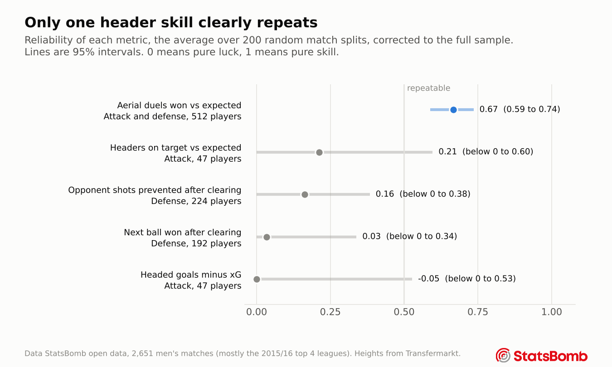

Chapter 4
Skill or luck
A player ranking is only useful if it would look similar with a different set of matches. This chapter shows how every ranking in the project was tested, and which ones passed.
The problem with raw numbers
Gareth Bale scored 10 headed goals from 4.0 expected. Pape Paye won 16 of 22 aerial duels when an average player would have won 9. Both numbers look impressive, and both come from small samples. A few lucky bounces can produce a number like that, so three steps separate what looks good from what is real.
Step one, compare with what was expected
Every header gets a probability from the models in chapters 2 and 3, made without seeing that player's own headers. A player's number is what he actually did minus the sum of those probabilities, divided by how many headers he had. For aerial duels it is reported per 100 duels.
Step two, pull small samples toward average
A player with 22 duels and a player with 423 duels should not be trusted equally. The fix is a standard statistical method called empirical Bayes shrinkage. It estimates how much true skill varies between players, then pulls each player's number toward zero according to how noisy his own sample is.
Two players, two sample sizes
Pape Paye won 16 aerial duels from 9.1 expected over 22 duels, which is +31 per 100. With so few duels, the method keeps only a quarter of that, and he ends at +8.
Aritz Aduriz won 239 from 151 expected over 423 duels, which is +21 per 100. With that much evidence the method keeps most of it, and he ends at +18, the best of any player.
Step three, check that it repeats
Even shrunk numbers can be mostly noise. The real test is whether a player's number in one set of matches predicts his number in another. This is called split half reliability.
- Every match is randomly assigned to group A or group B. A whole match always goes to one side, so things like a weak opponent cannot appear in both halves.
- Each player's above expected number is worked out separately in group A and in group B.
- Across all players, the A numbers are correlated with the B numbers. If good players in A are also good in B, the metric is measuring something real.
- Each half only has half the data, so the correlation is scaled up to the full sample with a standard formula, the Spearman Brown correction.
- The whole process is repeated for 200 different random splits. The average is the reliability. To get a 95% interval, every repetition also resamples the players with replacement, so the interval reflects both the random split and which players happen to be in the data.
A reliability of 0 means the ranking is pure luck. A reliability of 1 means it is pure skill. Around 0.5 and above, a ranking is worth using.

Only one metric clears the bar. Aerial duel ability repeats strongly, with a 95% interval of 0.59 to 0.74, even though the model behind it already knows both players' heights. Its lower end is above every other metric's estimate.
The other four show no clear signal, but the intervals tell an important second story. Headed finishing has a reliability of about zero, yet its interval reaches 0.53, because only 47 players have 25 or more headed shots. So the data finds no evidence that some players finish headers better than others, but it cannot rule out a moderate amount of skill either. Heading accuracy is in the same position, with an interval up to 0.60.
Is it the player or his team?
A team that defends crosses well could make all its defenders look good. To check, each player's duel number was compared with the number for his teammates in the same matches. The correlation is only 0.10, and the spread between teams is about a third of the spread between players. Aerial duel skill looks individual.
The ranking also survives two harder checks described on the Method page. A mixed effects model, which also adjusts for the strength of each opponent, ranks the players almost identically (rank correlation 0.988). And dropping the seasons that follow a single team, mostly Barcelona, leaves the reliability at 0.67.
For scouting in the air, use aerial duels won above expectation. Do not trust headed goals above xG yet. Free data has too few headers per player to tell finishing skill from luck in either direction.